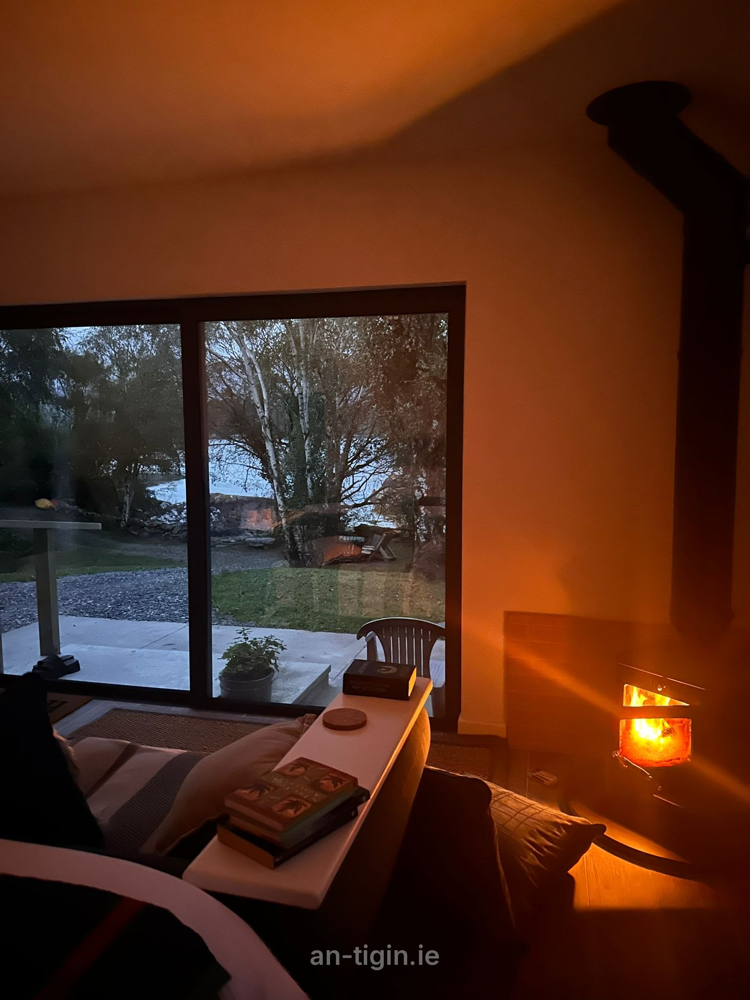

Contact
We'd love to hear from you.
Bookings, enquiries or any questions about your stay.
Your hosts
Geri & Shane
Book direct with us at An Tigín, Glengarriff. Check our availability, then call or email.
Getting here
3km from Glengarriff.
Bantry is 21km away and Cork Airport is 85km. Glengarriff has bus links to Cork City and Killarney, but we'd recommend your own transport so you can explore at your own pace.
We look forward to helping you plan your perfect getaway!